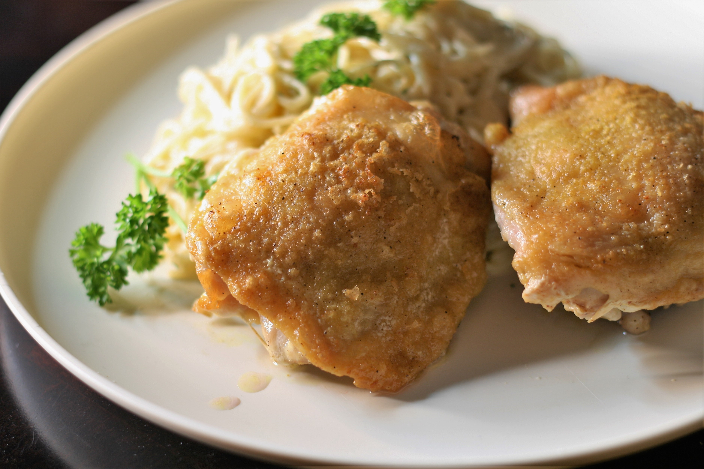

Easy Roasted Chicken

Easy to be done 35 minutes roasted chicken
Roasted chicken thighs that hubby says "almost taste like fried!"
Ingredients
- 5 pounds skin-on chicken thighs
- 2 tablespoons adobo seasoning, or to taste
- 1 tablespoon olive oil
Steps
- Preheat the oven to 425 degrees F (220 degrees C). Place a rack on a baking sheet.
- Place chicken, skin-side down, on the rack. Liberally sprinkle with adobo seasoning. Turn chicken over, brush olive oil on skin, and liberally sprinkle with adobo.
- Roast in the preheated oven until the juices run clear, about 30 minutes. An instant-read thermometer inserted into the center should read at least 165 degrees F (74 degrees C).
Back to recipes page